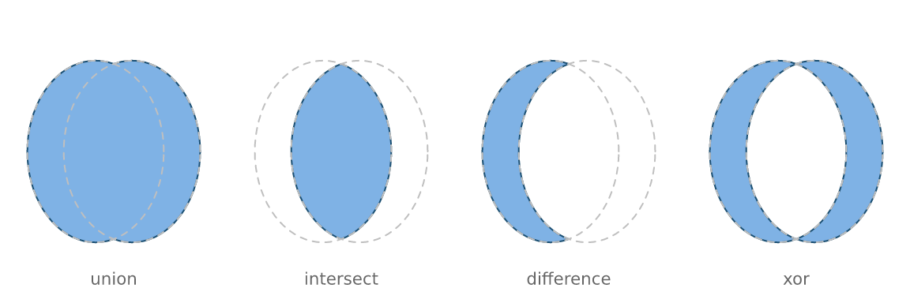
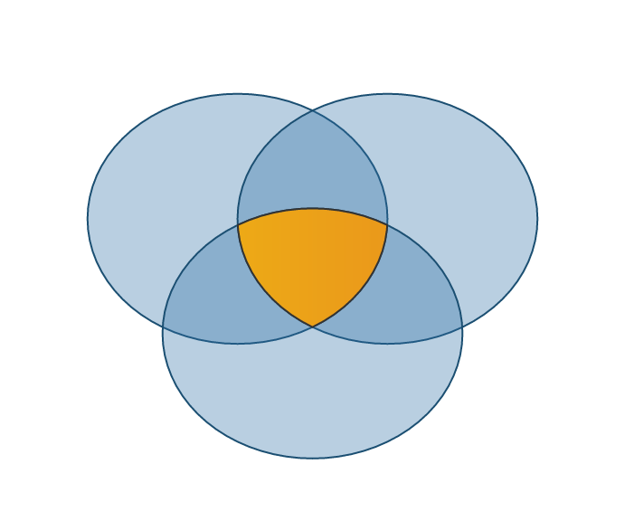
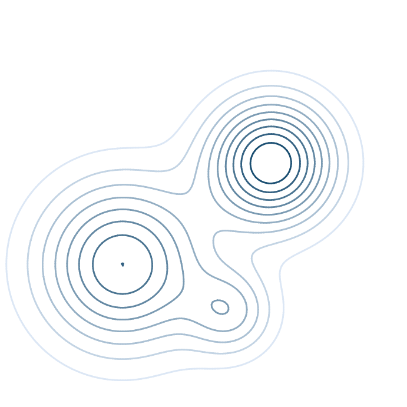
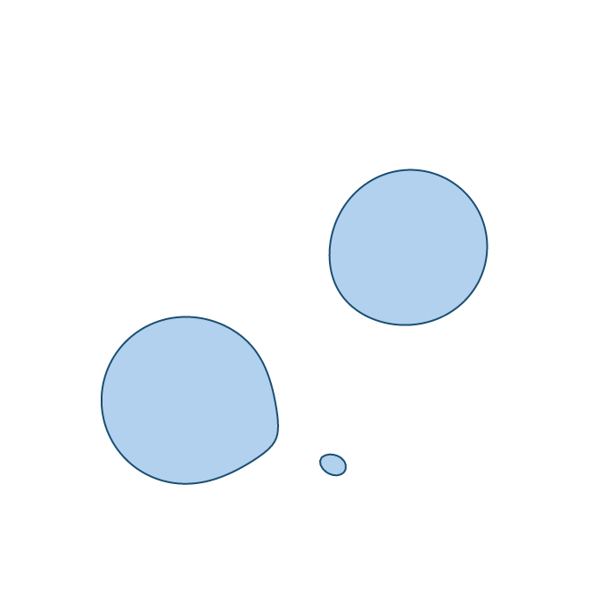
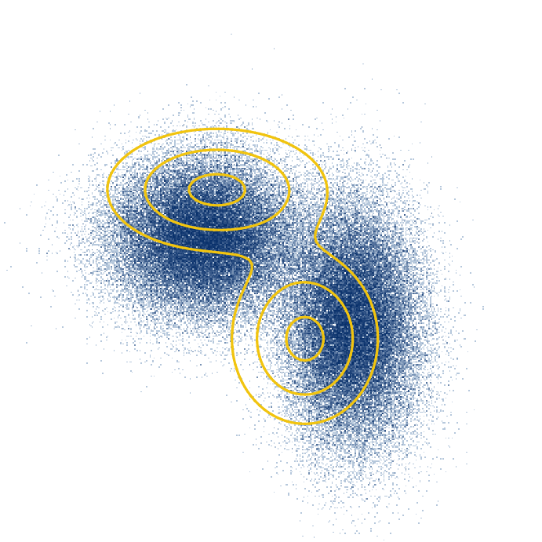
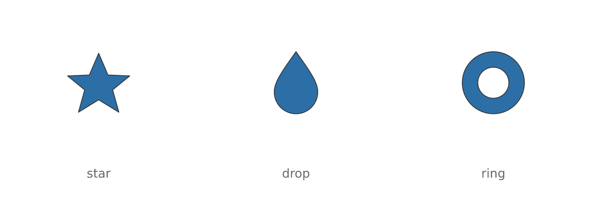

Geometry operations: booleans, contours, imported paths
Source:vignettes/geometry-operations.Rmd
geometry-operations.RmdThree operations that look unrelated and are not: each
produces geometry. A boolean result, a contour line and
an imported icon all come back as ordinary paths, so each can be
measured, filled with a gradient, stroked, hit-tested, simplified,
exported as <path> data — and fed into the
others.
Boolean operations
vl_path_op() combines two shapes: union,
intersect, difference or xor.
circ <- function(cx, cy, r = 0.3, n = 72) {
t <- seq(0, 2 * pi, length.out = n + 1)[-(n + 1)]
list(x = cx + r * cos(t), y = cy + r * sin(t))
}
a <- circ(0.42, 0.5)
b <- circ(0.58, 0.5)
s <- vl_scene(6, 2, dpi = 96, bg = "white")
o <- c("union", "intersect", "difference", "xor")
for (i in seq_along(o)) {
s <- s |>
push(vl_viewport(x = (i - 0.5) / 4, width = 0.25)) |>
draw(vl_path_op(a, b, o[i], gp = vl_gpar(fill = "#7FB2E5", col = "#1B4F72"))) |>
draw(polygon_grob(a$x, a$y, gp = vl_gpar(fill = NA, col = "grey75", lty = "dashed"))) |>
draw(polygon_grob(b$x, b$y, gp = vl_gpar(fill = NA, col = "grey75", lty = "dashed"))) |>
draw(text_grob(o[i], y = 0.08, gp = vl_gpar(fontsize = 8, col = "grey40"))) |>
pop()
}
display(s)
Why not just clip?
vellum can already clip one shape by another at render time, and for simply showing an intersection that is often enough.
A boolean result is different in kind. A clip is an instruction to the renderer; a boolean is a shape. Only the shape can be filled with its own gradient across its own bounding box, stroked along the new boundary the operation created, measured, hit-tested, or used as the operand of another boolean. Clips also rasterise as masks, and mask handling degrades on some PDF paths.
Here the centre cell of a three-set diagram is an intersection of intersections, given a gradient of its own and a stroke along an edge that exists in neither input:
c1 <- circ(0.38, 0.58, 0.24)
c2 <- circ(0.62, 0.58, 0.24)
c3 <- circ(0.50, 0.36, 0.24)
centre <- vl_path_op(vl_path_op(c1, c2, "intersect"), c3, "intersect")
venn <- vl_scene(3.6, 3, dpi = 96, bg = "white")
for (cc in list(c1, c2, c3)) {
venn <- draw(venn, polygon_grob(cc$x, cc$y,
gp = vl_gpar(fill = "#2C6FA655", col = "#1B4F72")))
}
display(draw(venn, S7::set_props(centre, gp = vl_gpar(
fill = linear_gradient(c("#F1C40F", "#E67E22")), col = "grey20", lwd = 1
))))
Holes
difference cuts. The result’s inner rings are wound
opposite their outer one, so a hole is a hole rather than a second solid
island:
plate <- list(x = c(0.1, 0.9, 0.9, 0.1), y = c(0.2, 0.2, 0.8, 0.8))
for (cx in c(0.3, 0.5, 0.7)) plate <- vl_path_op(plate, circ(cx, 0.5, 0.08), "difference")
display(vl_scene(6, 2, dpi = 96, bg = "white") |>
draw(S7::set_props(plate, gp = vl_gpar(fill = "#34495E", col = NA))))Two things to know. rule describes how to read the
inputs — whether a ring inside another is a hole
("evenodd") or a separate island ("nonzero") —
and must match how the operands were meant to be drawn. And operands
must be in a single coordinate space; mixing units is refused rather
than silently computed in whichever one came first.
Contours
vl_contour() runs marching squares over any matrix.
gx <- seq(-3, 3, length.out = 160)
# `outer(xs, ys, f)` puts rows on x and columns on y, which is what
# `vl_contour()` wants -- the same convention as `image()` and `contour()`.
z <- outer(gx, gx, function(x, y) {
exp(-((x - 1)^2 + (y - 0.6)^2) / 0.8) +
0.8 * exp(-((x + 1.2)^2 + (y + 0.9)^2) / 1.4) +
0.4 * exp(-((x - 0.4)^2 + (y + 1.6)^2) / 0.4)
})
levels <- seq(0.1, 0.9, by = 0.1)
cl <- vl_contour(z, levels = levels, xlim = c(-3, 3), ylim = c(-3, 3))
head(cl, 3)
#> level id x y closed
#> 1 0.1 1 -1.452830 -2.587502 TRUE
#> 2 0.1 1 -1.468483 -2.584906 TRUE
#> 3 0.1 1 -1.490566 -2.581434 TRUE
shade <- grDevices::colorRampPalette(c("#DCE7F5", "#1B4F72"))(length(levels))
s <- vl_scene(3.6, 3.6, dpi = 96, bg = "white") |>
push(vl_viewport(xscale = c(-3, 3), yscale = c(-3, 3)))
for (i in seq_along(levels)) {
part <- cl[cl$level == levels[i], ]
s <- draw(s, contour_grob(part, gp = vl_gpar(col = shade[i], lwd = 1.4)))
}
display(pop(s))
Segments are chained into continuous polylines rather than returned loose. Under a solid stroke the difference is invisible, and for everything else it is not: an unchained contour restarts its dash pattern in every grid cell, and nothing downstream can simplify, measure or close it.
Closed contours come back marked closed, which is what
lets them be filled:
ring <- cl[cl$level == 0.5 & cl$closed, ]
display(
vl_scene(3.6, 3.6, dpi = 96, bg = "white") |>
push(vl_viewport(xscale = c(-3, 3), yscale = c(-3, 3))) |>
draw(path_grob(vl_unit(ring$x, "native"), vl_unit(ring$y, "native"), id = ring$id,
gp = vl_gpar(fill = "#7FB2E599", col = "#1B4F72"))) |>
pop()
)
Note contour_grob() returns one grob per
contour, and draw() accepts a list of grobs. That
is not incidental tidiness: lines_grob() draws a single
polyline, and its id is the accessibility identifier rather
than a grouping variable as in path_grob(). Passing all the
contours to one lines_grob() draws a straight line from the
end of each to the start of the next — vellum now refuses a multi-value
id for exactly that reason.
Cells with a non-finite corner are skipped, so a contour breaks around missing data instead of being drawn through it.
Over a datashaded base
This is the idiom the aggregate-then-shade design was built for
(vignette("datashading")): the grid is a fixed-size
intermediate either way, so isolines over a density surface reuse work
already done.
set.seed(11)
N <- 100000
px <- c(rnorm(N / 2, -1, 0.7), rnorm(N / 2, 1.2, 0.5))
py <- c(rnorm(N / 2, 0.5, 0.6), rnorm(N / 2, -0.8, 0.9))
base <- datashade(px, py, width = 420, height = 420, xlim = c(-4, 4), ylim = c(-4, 4))
dens <- outer(seq(-4, 4, length.out = 120), seq(-4, 4, length.out = 120),
function(x, y) {
0.5 * exp(-((x + 1)^2 / (2 * 0.7^2) + (y - 0.5)^2 / (2 * 0.6^2))) +
0.5 * exp(-((x - 1.2)^2 / (2 * 0.5^2) + (y + 0.8)^2 / (2 * 0.9^2)))
})
iso <- vl_contour(dens, levels = c(0.1, 0.25, 0.45), xlim = c(-4, 4), ylim = c(-4, 4))
display(
vl_scene(3.6, 3.6, dpi = 96, bg = "white") |>
push(vl_viewport(xscale = c(-4, 4), yscale = c(-4, 4))) |>
draw(base) |>
draw(contour_grob(iso, gp = vl_gpar(col = "#F1C40F", lwd = 1.6))) |>
pop()
)
SVG path data
svg_grob() parses the d attribute of an SVG
<path> into scene geometry.
d is the unit of exchange that matters: icon sets — Font
Awesome, Bootstrap Icons, Lucide, Material — ship one
<path d="..."> per glyph. That is what makes vector
icon markers possible.
icons <- list(
star = "M12 2 L15 9 L22 9.3 L16.5 13.8 L18.5 21 L12 17 L5.5 21 L7.5 13.8 L2 9.3 L9 9 Z",
drop = "M12 2 C7 9 5 12 5 15 a7 7 0 0 0 14 0 c0-3-2-6-7-13 z",
ring = "M12 2 a10 10 0 1 0 0.001 0 z M12 7 a5 5 0 1 1-0.001 0 z"
)
s <- vl_scene(6, 2, dpi = 96, bg = "white")
for (i in seq_along(icons)) {
s <- s |>
draw(svg_grob(icons[[i]], x = (i - 0.5) / length(icons), y = 0.58,
size = vl_unit(16, "mm"),
gp = vl_gpar(fill = "#2C6FA6", col = "grey20", lwd = 0.8))) |>
draw(text_grob(names(icons)[i], x = (i - 0.5) / length(icons), y = 0.12,
gp = vl_gpar(fontsize = 9, col = "grey40")))
}
display(s)
The whole d grammar is supported —
M/L/H/V/C/S/Q/T/A/Z
absolute and relative, implicit repeated commands, the smooth-curve
reflection rules, and elliptical arcs including the packed flag form
(a1 1 0 011 5 5) that minified icon files use. A partial
implementation of a spec this small fails on real files for reasons a
user cannot diagnose.
What is not here is the rest of SVG: no stylesheets,
gradients, <use>, clip paths or element transforms.
This reads path data, not documents. To pull d strings out
of a file, use an XML parser and pass each one in:
doc <- xml2::read_xml("icon.svg")
ds <- xml2::xml_attr(xml2::xml_find_all(doc, "//d1:path"), "d")
lapply(ds, svg_grob, size = vl_unit(10, "mm"))SVG’s y axis points down and vellum’s points up, so
svg_grob() flips it by default; the geometry is then scaled
so its longer side is size and centred on
x/y, which makes icons from sources with
different viewBoxes come out the same size.
Because it is geometry
Icons take a gradient fill and stay sharp at any size — which raster-per-point markers cannot do — and they compose with the booleans above:
set.seed(5)
k <- 14
mx <- seq(0.06, 0.94, length.out = k)
my <- 0.5 + 0.28 * sin(seq(0, 3 * pi, length.out = k))
s <- vl_scene(6, 2, dpi = 96, bg = "white")
for (i in seq_len(k)) {
s <- draw(s, svg_grob(icons$star, x = mx[i], y = my[i],
size = vl_unit(4 + 5 * (i / k), "mm"),
gp = vl_gpar(fill = linear_gradient(c("#F1C40F", "#C0392B")),
col = NA)))
}
display(s)
star <- vl_svg_path(icons$star)
half <- vl_path_op(
list(x = star$x, y = star$y, nper = nrow(star)),
list(x = c(0, 24, 24, 0), y = c(0, 0, 11.5, 11.5)),
"difference", rule = "evenodd"
)
sx <- as.numeric(vctrs::field(half@x, "value"))
sy <- as.numeric(vctrs::field(half@y, "value"))
display(
vl_scene(2.6, 2.6, dpi = 96, bg = "white") |>
push(vl_viewport(xscale = c(0, 24), yscale = c(24, 0))) |>
draw(path_grob(vl_unit(sx, "native"), vl_unit(sy, "native"),
id = rep(seq_along(half@nper), half@nper),
gp = vl_gpar(fill = "#E67E22", col = "grey20"))) |>
pop()
)Where to go next
-
vignette("placement"):vl_hull()andvl_buffer(), the other geometry producers — and the reasonvl_buffer()leaves self-intersection alone, which is that repairing it is avl_path_op()union. -
vignette("datashading"): the aggregate grid the contours pair with. -
vignette("scene-and-paint"): gradients, patterns and hatching, all of which work on any path these produce.